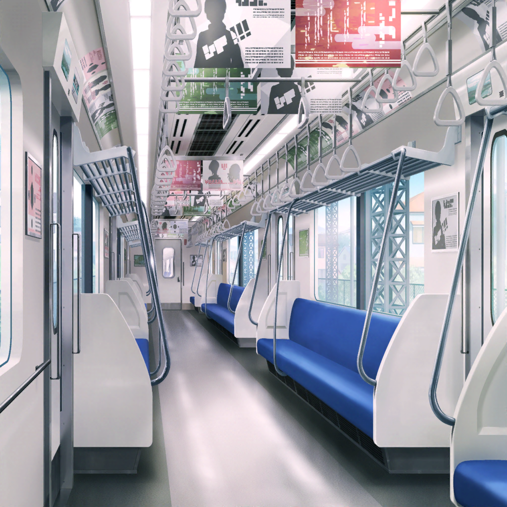

電車
薫・彩
急行！？
薫
……なるほど。
千聖と花音は電車を乗り間違えたということか
薫
まったく、うっかり屋さんの子猫ちゃんだね
美咲
いや、薫さんと彩先輩も人の話聞かないで電車に乗ってたから
彩
てっきり乗る電車なのかと思っちゃって……
薫
でも問題はないはずさ。
どちらにしろ、今日は二人を見守るのが目的だからね
美咲
まあ、そうだけど……
でも、何も同じ車両に乗り込まなくてもよかったんじゃない？
薫
ああ、それは同感だよ。
同じ車両に乗らないと二人を見守れないと思ったのだけど、
こんなに近くに来てしまったのは想定外だね……
美咲
ホントだよ。薫さん、ただでさえ目立つのに……！
彩
どうしよう、すぐそこに二人がいるよ〜
美咲
げっ！ こっち向かれたら、薫さん絶対気づかれるよ！
薫
美しすぎて、すまない……
薫
でも、安心してくれ。
私にあるのは美しさだけじゃない、演技の力がある……！
美咲・彩
演技の力？
薫
この美貌を抑える演技をして、二人の目を欺く……
つまり、そういうことさ
彩
そ、そんなことできるの？
薫
ああ、もちろん。
自然な芝居で日常に溶け込んでしまえばいい
薫
電車の中にいても自然な人物になりきれば
溶け込みやすいかもしれないな
美咲
自然な人物？ それってどんな人？
薫
例えば……そう、車掌さんはどうかな？
彩
確かに！ 絶対電車にいるよね……！
美咲
いやいや、いるけど、ダメでしょ！
薫
ダメ？ どうしてだい？
美咲
えっ？ えっと、理由言わなきゃダメ？
彩
あっ、制服……制服だよ、薫さん！
車掌さんは制服がなくちゃ！
薫
……っ！ そ、それは盲点だったよ……！
薫
確かに今の私に車掌さんになりきるのは不可能だ……！
美咲
いや、そういう問題じゃなくて、むしろ目立つからなんだけど……
薫
しかし、車掌さんができないとなると
当然運転士さんもできない……
薫
私はいったい誰を演じれば……！
美咲
普通の女子高生とかじゃダメなの？
薫
え？
美咲
薫さんはとにかく妙にオーラがあるんだから、
ごく普通の女子高生くらいオーラを抑えればいいんじゃない？
薫
なるほど……それは一理あるね。
それなら演技のプランは普通の女子高生……
美咲
うんうん
薫
しかし、生き別れの姉がいて、最近その事実に気づいてしまった。
姉に会いたい、そんな思いを抱えながら日々を送る普通の……
美咲
はい、ちょっと待って。
その生き別れ設定いる？
彩
な、なんだか無駄にドラマチックだね……
薫
無駄なんかじゃないさ。
そのほうが演技のしがいがあるだろう？
美咲
今、役者魂出さなくてよくない……？
美咲
ていうか、よく考えたら
別に二人にバレても大丈夫だと思うんだけど
薫
ん？ どういうことだい？
美咲
こっちがこっそりついてきてるなんて知らないんだし、
偶然会ったフリをすればいいんじゃない？
薫・彩
あ……！！
彩
言われてみれば、そうだね……
なんで気づかなかったんだろ
薫
さ、さすが、美咲だね。
実は私も薄々そんな気はしていたんだ
美咲
いや、絶対してなかったでしょ